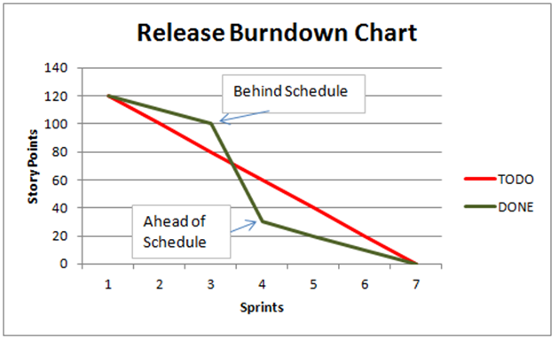

Timesheet Tracking program
A dynamic Timesheet tracker that will allow you to compile years of data into an easy to read format with visually appealing reports
A dynamic Timesheet tracker that uses
Due to a written contract with DICE I CANNOT post code nor images from the software itself, but I will include what was created in my own words
My project team created a timesheet tracker that uses a typescript and typescript XML format to bring a dynamic database that will keep track and accurate reports of: budgets per project, employee clock in times, employee hours, expenses per project, sources of funding per project, notifications when a project is nearing budget/time constraints, and scheduling of pay periods
Testing with Cypress and fixtures we were able to gaurentee its efficiency and ability to properly track when a project is on time or when it is behind schedule or approaching a funding limit. We allowed the creation of notification thresholds as to when you wish to be notified on a projects progress.
Timesheet Gallery

Not our program output, but an example of how our burndown chart worked for our timesheet tracker, indicating when you were on track or off track via a line representation
 Our software was able to track employee clock in and clock out times, as well as what the payschedule for each employee was on. We could track when a project funding source was nearing completion and automatically allocate funds from another funding source to pay out employees.
Our software was able to track employee clock in and clock out times, as well as what the payschedule for each employee was on. We could track when a project funding source was nearing completion and automatically allocate funds from another funding source to pay out employees.